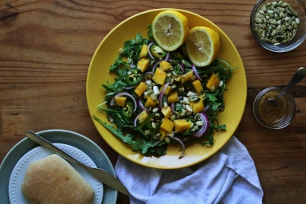
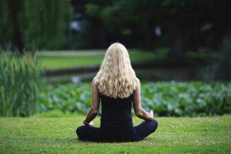
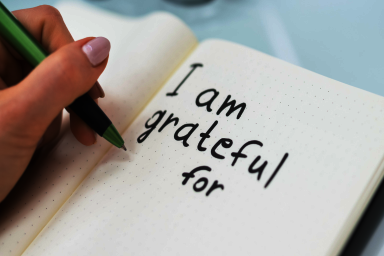

Boost Your Wellness
Simple Practices for a Healthier You
Wellness is more than just the absence of illness; it encompasses a holistic approach to living a fulfilling and balanced life. In today's fast-paced world, prioritizing wellness has become increasingly crucial for maintaining overall health and vitality.
Physical Health
Physical health forms a cornerstone of overall wellness. When we prioritize our physical well-being, we lay a foundation for optimal health and vitality. Engaging in regular exercise, maintaining a balanced diet, getting enough sleep, and managing stress are fundamental practices that contribute to physical wellness.
Nutrition
Eating a nutritious diet rich in fruits, vegetables, whole grains, and lean proteins provides essential nutrients for the body to function optimally. Sufficient sleep is vital for rest and rejuvenation, supporting cognitive function, mood regulation, and immune system health. Managing stress through relaxation techniques, mindfulness practices, or hobbies helps prevent the detrimental effects of chronic stress on physical health.
Actionable Tips for Boosting Wellness

Prioritize Self Care
Practice self-care by carving out time for activities that bring you joy and relaxation. Whether it's indulging in a warm bath, reading a book, or going for a nature walk, prioritize activities that replenish your energy and nourish your soul.
Cultivate Mindfulness
Incorporate mindfulness practices such as meditation, deep breathing exercises, or yoga into your daily routine. Mindfulness helps to anchor you in the present moment, reduce stress, and promote emotional well-being.
Foster Social Connections
Nurture meaningful relationships with friends, family, and community members. Social connections provide support, encouragement, and a sense of belonging, which are essential for emotional resilience and overall well-being.
Express Gratitude
Cultivate an attitude of gratitude by regularly expressing appreciation for the blessings in your life. Keeping a gratitude journal or simply taking a moment each day to reflect on what you're thankful for can foster a positive outlook and enhance overall happiness.
Embrace Lifelong Learning
Embrace opportunities for personal and professional growth through continuous learning and skill development. Whether it's pursuing a new hobby, taking a course, or attending workshops, engaging in lifelong learning stimulates the mind and fosters a sense of fulfillment.
Daily Wellness Practices
Incorporating wellness practices into your daily life can lead to profound benefits for your overall health and well-being. By prioritizing self-care, fostering social connections, cultivating mindfulness, and embracing lifelong learning, you can embark on a journey towards a healthier, more fulfilling life. Remember that wellness is a lifelong pursuit, and small, consistent actions can make a significant difference in your quality of life. Start implementing these practices today and watch as they transform your wellness journey for the better.
Subscribe for Updates
Enhance Your Wellness Journey with Nourish & Nurture
If you enjoyed the content, consider joining our community and receive the latest news, tips, and resources to nourish your body, mind, and soul.